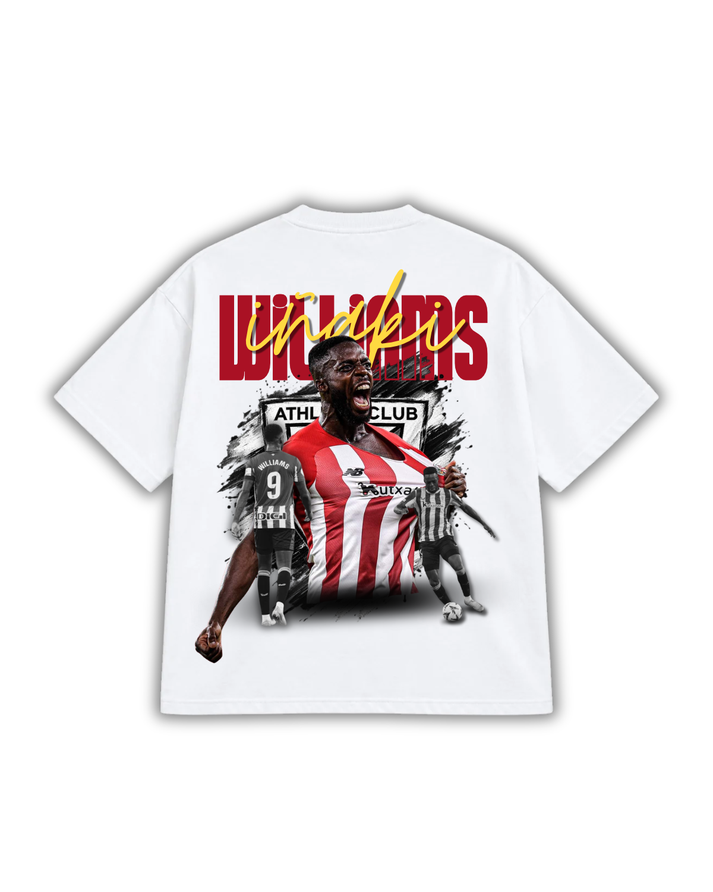
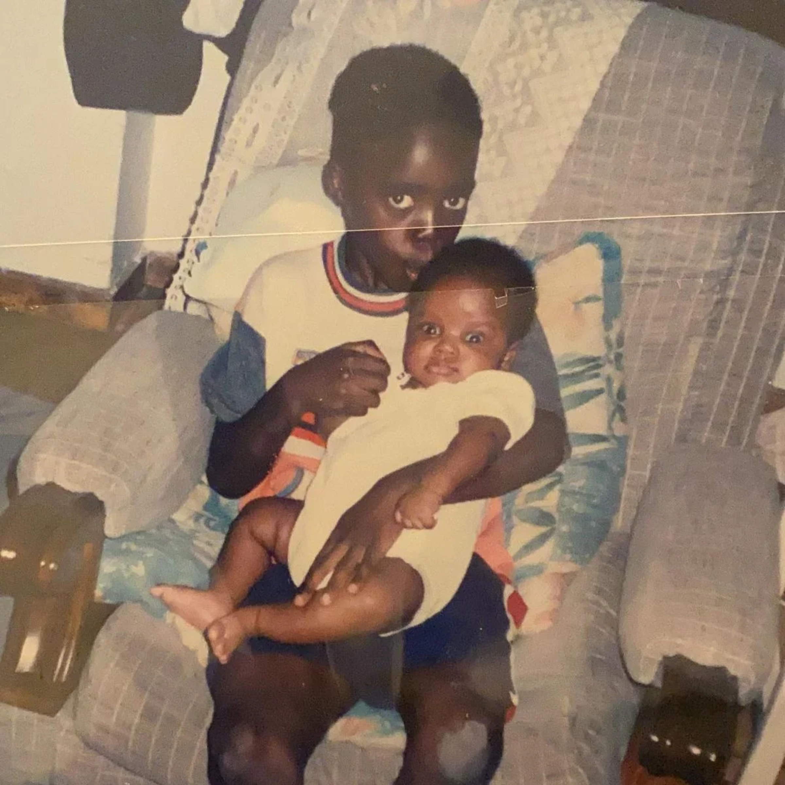
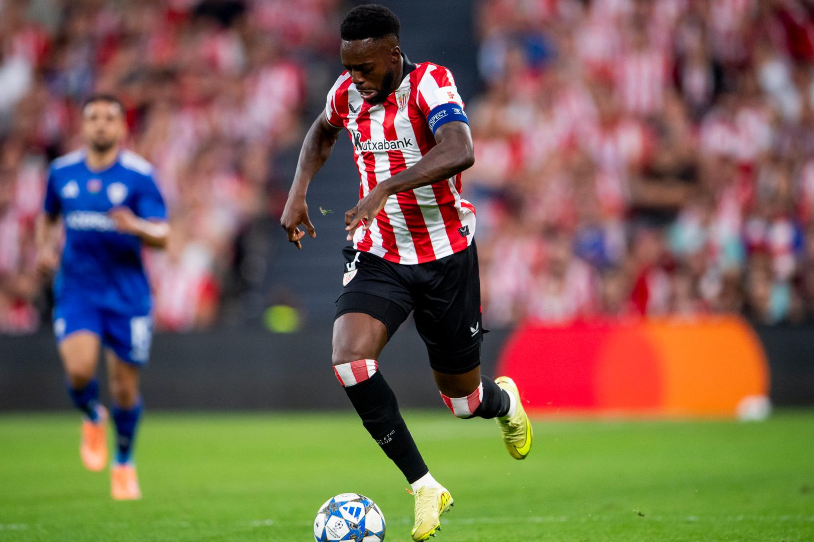
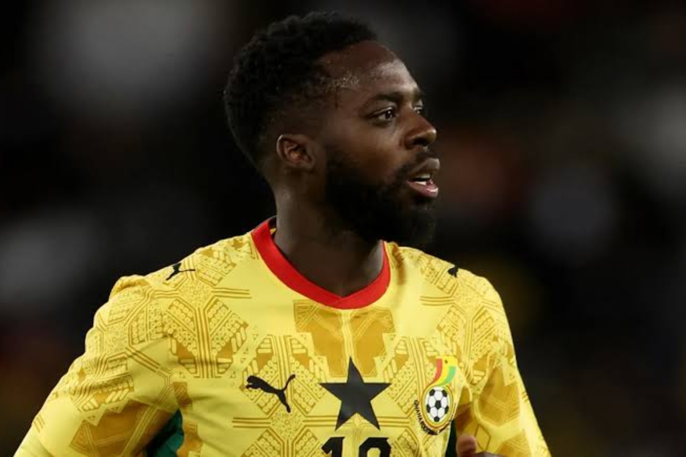

2013
Bước chân vào bóng đá chuyên nghiệp
Thi đấu cho Basconia và Bilbao Athletic, ghi dấu ấn ở các cấp độ trẻ trước khi tiến gần hơn tới đội một.
Tốc độ, sức mạnh và lòng trung thành. Hành trình của chàng trai Bilbao trở thành một trong những biểu tượng hiện đại của Athletic Club.

Sinh ra tại Bilbao trong một gia đình có gốc Ghana, Iñaki Williams chọn biến nơi mình lớn lên thành mái nhà bóng đá — và Athletic Club thành màu áo của cả sự nghiệp.

Iñaki Williams Arthuer sinh ngày 15 tháng 6 năm 1994 tại Bilbao, Tây Ban Nha. Lớn lên trong hệ thống đào tạo bóng đá địa phương, anh từng bước đi qua Basconia và Bilbao Athletic trước khi được trao cơ hội ở đội một.
Điểm mạnh nổi bật của Iñaki là tốc độ bứt phá, thể chất mạnh mẽ và khả năng chơi ở cả vị trí tiền đạo lẫn tiền đạo cánh. Nhưng điều khiến anh trở nên đặc biệt với người hâm mộ Athletic còn là sự bền bỉ và gắn bó lâu dài với CLB.
Từ trận ra mắt năm 2014 đến chiếc cúp Copa del Rey và những cột mốc lịch sử trong màu áo đỏ-trắng.
Thi đấu cho Basconia và Bilbao Athletic, ghi dấu ấn ở các cấp độ trẻ trước khi tiến gần hơn tới đội một.
Ngày 6/12/2014, Iñaki có trận ra mắt LaLiga trước Córdoba CF tại sân San Mamés — khởi đầu cho hành trình hơn một thập kỷ gắn bó với đội bóng.
Athletic Club đánh bại Barcelona để giành Siêu cúp Tây Ban Nha. Iñaki bắt đầu khẳng định vị trí trong đội hình.
Chuỗi 251 lần ra sân liên tiếp tại LaLiga từ tháng 4/2016 đến tháng 1/2023 trở thành kỷ lục của giải đấu — minh chứng cho sự bền bỉ phi thường.
Iñaki ghi bàn thắng trong hiệp phụ ở chung kết Supercopa 2021, giúp Athletic Club vượt qua Barcelona và nâng cao chiếc cúp.
Sau một lần xuất hiện trong màu áo Tây Ban Nha ở trận giao hữu, Iñaki quyết định đại diện cho Ghana — quê hương của cha mẹ anh — ở cấp độ quốc tế.
Athletic Club giành Copa del Rey 2023/24, chấm dứt 40 năm chờ đợi danh hiệu này. Iñaki là một trong những thủ lĩnh của tập thể làm nên lịch sử.
Tháng 3/2026, anh cán mốc 500 trận chính thức cho Athletic. Tháng 9/2026, Iñaki tuyên bố khép lại sự nghiệp đội tuyển Ghana sau 28 lần ra sân và 2 bàn thắng.
Những dấu ấn làm nên Iñaki Williams: lòng trung thành với CLB, bản lĩnh ở các trận cầu lớn và niềm tự hào về nguồn cội.

Chuỗi ra sân liên tiếp dài nhất lịch sử LaLiga: 251 trận, kéo dài gần bảy năm.

Sinh ra tại Bilbao, mang trong mình nguồn cội Ghana và từng đại diện Black Stars trên sân khấu bóng đá thế giới.
Mỗi ô vuông là một trận LaLiga liên tiếp. Cuộn tới đây để xem chuỗi kỷ lục được thắp sáng từng trận một.
Bấm (hoặc chạm) liên tục vào nút trong 10 giây để chạy hết đường đua 100 bước. Kỷ lục của bạn được lưu lại trên thiết bị.
Mỗi ngày có một cầu thủ bí mật mới, đổi vào 0h. Bạn có 6 lượt để đoán tên. Đoán đúng liên tiếp để nối dài chuỗi ngày.
Cách chơi: gõ họ cầu thủ (không dấu), đủ số chữ cái rồi bấm Enter. Xanh lá đúng chữ, đúng vị trí · Vàng có chữ nhưng sai vị trí · Xám không có chữ này.
Kho 54 câu hỏi về Iñaki và Athletic Club. Mỗi lượt chọn ngẫu nhiên 10 câu, đáp án được xáo trộn. Trả lời đúng để nhận danh hiệu fan.
Màu áo đỏ-trắng, những pha bứt tốc và tinh thần chiến đấu tại San Mamés. Chạm vào ảnh để xem lớn, vuốt để chuyển ảnh.
Một hành trình được viết bằng tốc độ, sự kiên trì và tình yêu dành cho màu áo đỏ-trắng. Câu chuyện của Iñaki Williams vẫn tiếp tục tại Bilbao.
Hồ sơ chính thức ↗